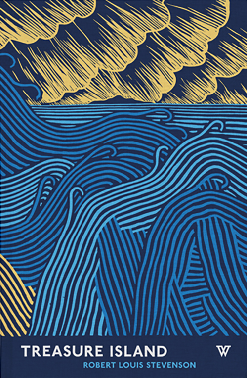
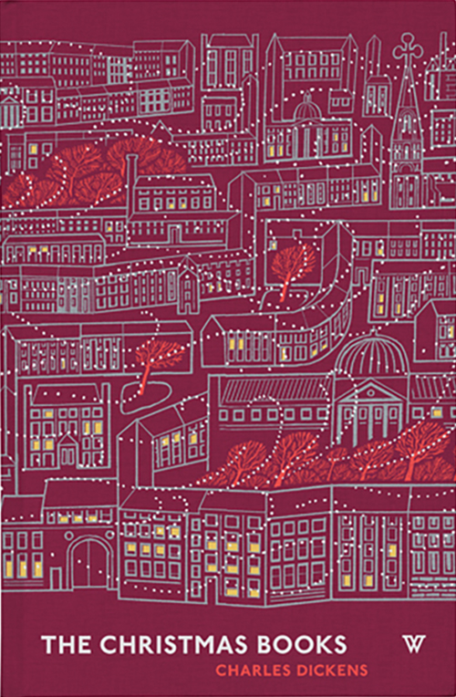
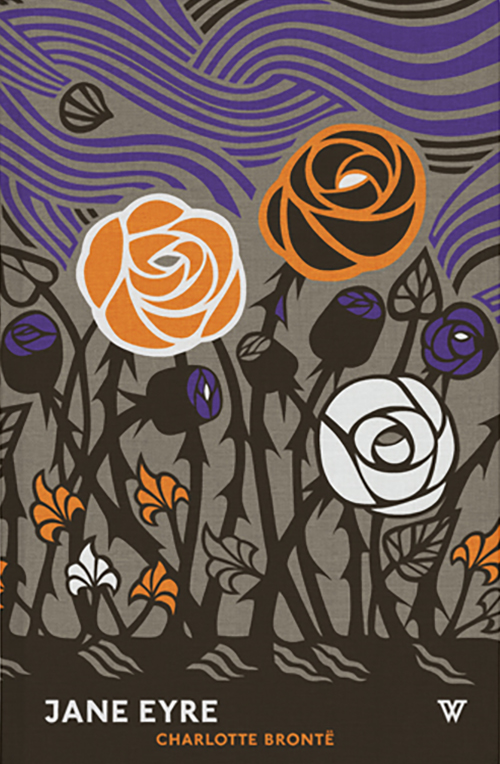

Interview with David Pearson
Please could you tell us briefly about your background?
I studied at Central Saint Martins in London and during a work placement in my second year (with Phaidon), I fell in love with book design. From that point on, I tried to pin down a job within the industry and on graduation, began working as a text designer for Penguin (setting the insides of books) before moving over to covers a year later. I worked in-house there for five years and have worked on my own for the seven years since.
How would you describe your style?
It is certainly revivalist, which is another way of saying that I steal from the past. Typography is almost always the main ingredient and this, along with a limited colour palette, tends to give my work a unified look.
What’s been the biggest singular influence on your work?
Penguin Books but more specifically, the designers that have worked there over the years. whether it is the clarity and the directness of Derek Birdsall’s work, David Pelham’s dual-aspect, smile-in-the-mind covers or Hans Schmoller’s meticulous and elegant typography, the company and its employees have informed most of what I do.
What’s the thing you enjoy most about book design?
Book cover design is one of the few design disciplines where ambiguity is actively encouraged. By holding back information and being quietly suggestive readers are invited to fill in the blanks and interpret for themselves. As far as I can see, there aren’t too many other situations where we are invited to engage with what we see and in turn, form meaningful connections with imagery.

Which project has given you the most satisfaction so far?
Both Penguin by Design and the Great Ideas series. They were both jobs that I was allowed to oversee as a junior, which was such a thrill and a testament to the trusting environment at Penguin. Also, both felt like formative jobs in terms of what I have done since. The Great Ideas series (which eventually ran to one hundred books) represents several years’ work and so forms a kind of visual history of my career so far.
What areas of your work are you hoping to explore in the
next year?
I am trying to develop closer relationships with type designers so that I can gain a better understanding of how type comes to be, so hopefully, I can use it more sensitively.
What do you know now, that you wish you knew when
you left college?
Sadly, when I was studying I didn’t have the strength of character to realize what a crock of shit this type of comment was: ‘Only bad designers use more than one/two/three typefaces’. I now teach and see so many students similarly crippled by such sentiments; scared to even begin experimenting for fear they won’t be taken seriously. Any typeface can be a fit for something. the most important thing is the spirit with which it is used and for young minds to be hobbled by such nonsense frustrates me no end.
What’s the last thing that made you say ‘wow’?
I love Spin’s poster for last year’s giacometti exhibition (at fundación PROA). I really wish I’d done that.

Do you think it’s important to be able to draw as a designer?
I still think that sketching is the quickest way of generating and canceling-out ideas but I must admit to doing it less-and-less these days. I seem to now draw mostly when drunk and trying to make people laugh. I also draw for sport: my girlfriend and I enjoy trying to capture Gareth Southgate’s likeness and try to out-do each other whenever he appears on TV. Gareth represents a unique challenge in that his face points in several different directions at the same time.
What do you do to keep your ideas fresh?
Fear plays a substantial role when it comes to moving my work on. fear that people will suddenly get bored or accuse me of regurgitating. When you use typography as your sole form of expression, repetition can very quickly become an issue.
What compels you to design and what other compulsions
do you have?
Aside from it being the only thing I can do (I am a failed footballer + window cleaner) I have an innate desire to make some sort of visual sense of things. unfortunately, this spills into all areas of my life and can mean that I spend half a day categorizing spare buttons.
Do you have any superstitious beliefs?
None whatsoever. I won’t leave a knife in the fork drawer, but I suspect this is more down to OCD than a belief in the supernatural.
